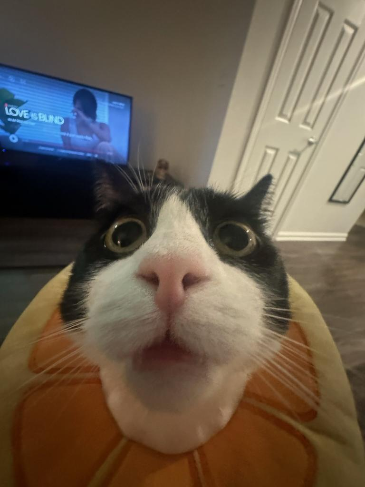

Lian Wang
Undergraduate at Stanford University
lianwang (at) stanford (dot) edu
I am an undergrad at Stanford studying linguistics and statistics. The photo is not my cat, it is a redditor's.
Papers
- To appear. Lian Wang. Covert Wh-verb Movement in Mandarin Chinese. WCCFL 42.
- 2024. Jiayi Lu*, Jonathan Merchan*, Lian Wang*, and Judith Degen. Can Syntactic Log-Odds Ratio Predict Acceptability and Satiation? SCiL 2024. [paper]